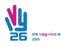

2026 INTERNATIONAL YEAR OF VOLUNTEERS
2026년은
'세계 자원봉사자의 해'
입니다
유엔이 정한 해,
25년 만에 다시 찾아왔습니다
1 / 5

유엔이 정한 해,
25년 만에 다시 찾아왔습니다
유엔 총회는 2023년 12월,
2026년을 '세계 자원봉사자의 해'로
선언했습니다.
2001년 이후 25년 만의 지정입니다.
출처: 행정안전부·한국중앙자원봉사센터 「2026 대한민국 자원봉사 현황」
(2026. 7. 발간, 2025년 기준)